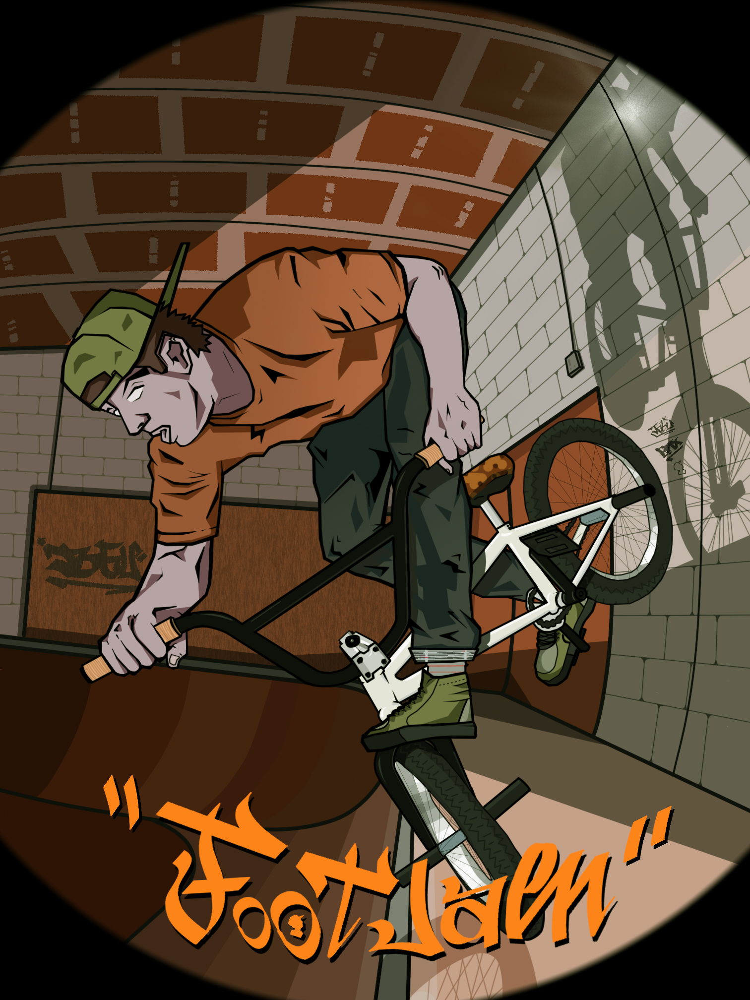
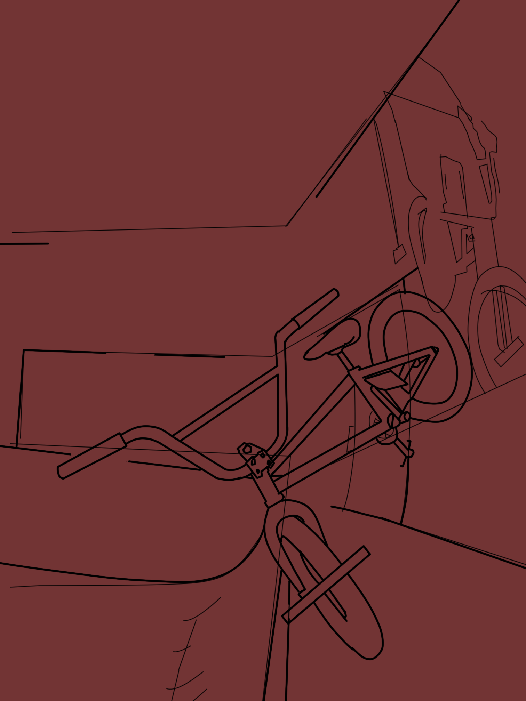
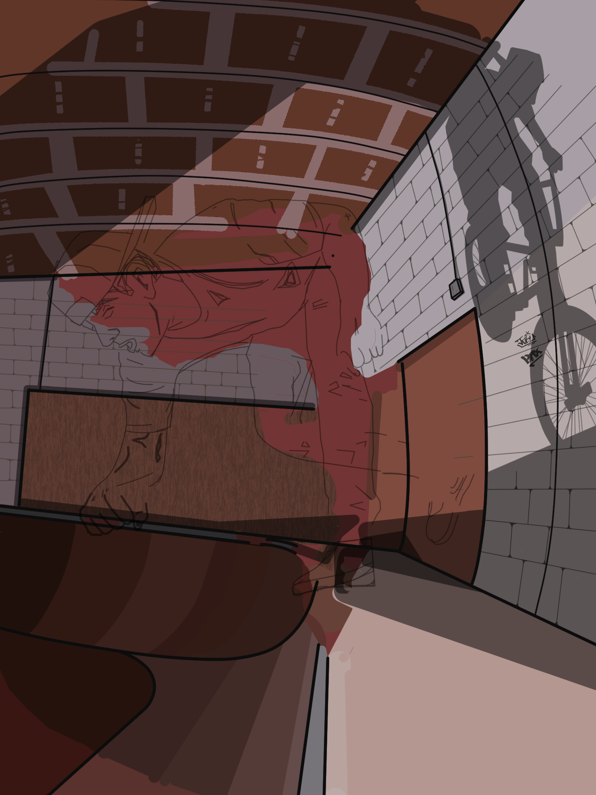
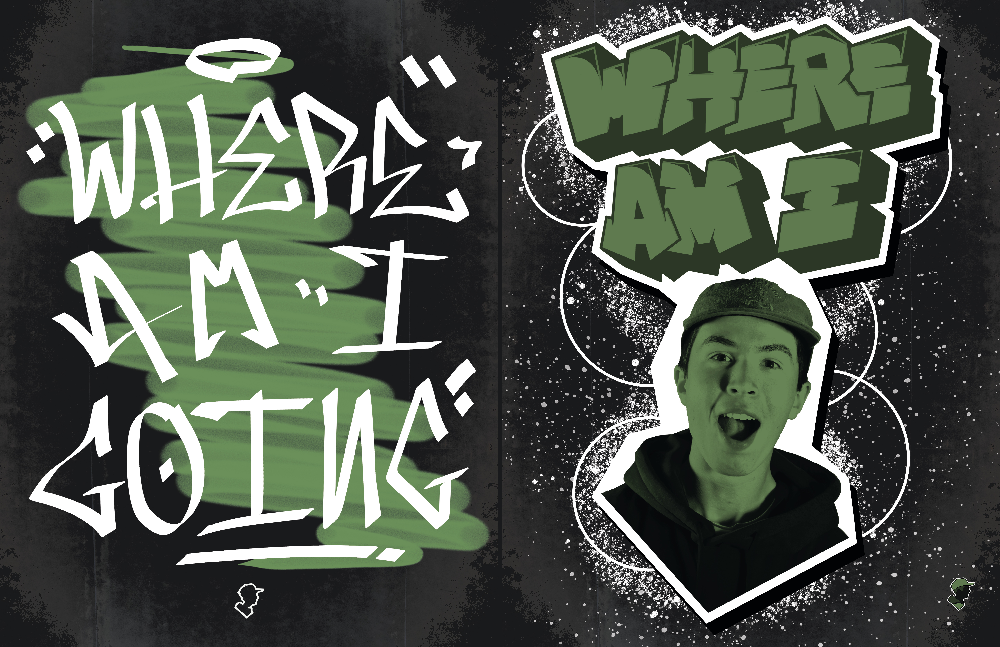
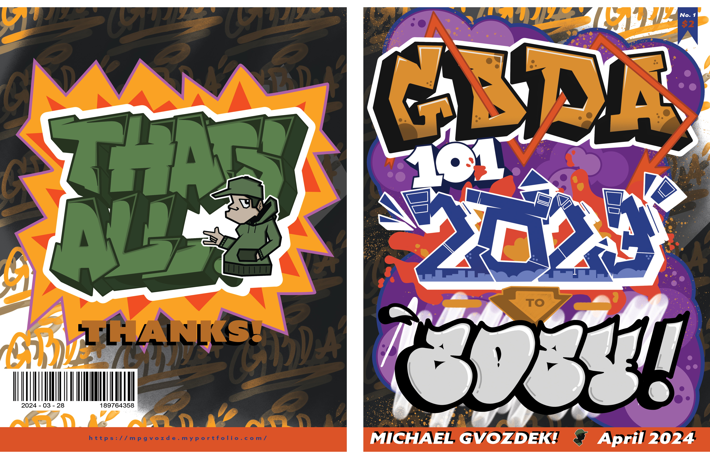

Gallery
A collection of some of my favourite projects I have created over the years.
3D Modeling and Animation


The Aries was one of the first big projects I worked on in 3D. It is a spaceship inspired by those seen in The Expanse. I also created a short animation of the ship flying through space, which can be seen here: https://youtube.com
The model went through a series of iterations including different paint jobs and textures. I really had trouble texturing the ship. It was my first time modeling something complex and I didn't know how to properly model something with texturing in mind at the time. An earlier version can be seen below.


I later went on to create a new and more complex spaceship model in a similar style. The texturing and modeling went better after my experience with the Aries.


After figuring out I sucked at texturing, I picked up a new style that used solid colours instead. No textures meant I could focus more on other aspects, and I ended up liking the new style alot better than when I tried texturing.
You can see a few more of these 3D projects on my Instagram @Jobuandme
Esports Designs
During my part time position as a graphic designer for Uwaterloo Esports, I created several different series of designs. Some notable ones being overlays for the Warriors Esports streams, Gaming Lounge announcement graphics, and several social media posts for tournaments.
.png)


.png)

Illustrations
These were a few projects I created to practice my illustration skills. They were both drawn on Photoshop using just my mouse.


Some work in progress shots:




Bound By Boards
"Your “Bound By Boards” documentary is the one I showed in class to spur critical discussion and to inspire. It is truly excellent. Not only does it nail many of the assignment’s technical and aesthetic asks, but it’s also full of heart and life. It’s a lovely, worthwhile piece of media."
- Jonathan Baltrusaitis
Bound By Boards was my groups final project in GBDA 201, a film class. We had to make a documentary about a topic of our choice. We chose to make a doc about the Skateboarding Club at the University of Waterloo.
Directed by Michael Gvozdek
Production Manager: Giancarlo Haidar
Producers: Michael Gvozdek , Giancarlo Haidar
Director of Photography: Charlie Cilla
Boom Operator: Giancarlo Haidar
Editing: Michael Gvozdek
Research: Haojia Sun
Special Thanks To:
Timur Khayrollin
Saira Hadi
Manav Vellore
Philip Stanoev
Magazines
I made 2 magazines in my first and 2nd years of university. Their covers are below:

